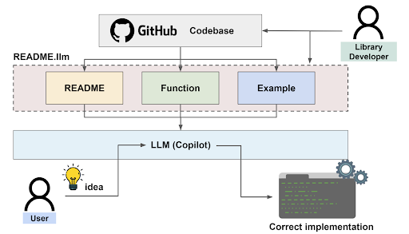

About
ReadMe.LLM is a framework that enables Large Language Models (LLMs) to contextualize and understand Software Libraries easily. Currently, LLMs can generate text and code based on libraries on which they were previously trained. However, there are many libraries that LLMs were not trained on, and subsequently unable to effectively understand. Having this connection to an LLM is vital for developers looking to use any software library. We are looking into a novel way of providing library context, which an LLM can easily digest and use as context for responding to user queries.
Library Makers
Challenge: Loss of potential users to bigger alternative libraries AI is better at coding with.
Action: Create a ReadMe.LLM.
Result: More adoption and thus a fairer playing field.Developers
Challenge: Incorrect code causes frustration and wastes time and resources for debugging.
Action: Prompt LLM with ReadMe.LLM file.
Result: Seamless development and thus faster innovation.Contact
readmellm.ucb@gmail.com